カメラ機能¶
カメラ機能のインストール¶
本製品出荷時では、カメラ機能はインストールされておりません。そのため、WEB UIの「メンテナンス」→「機能拡張」タブからカメラ機能をインストールしてください。
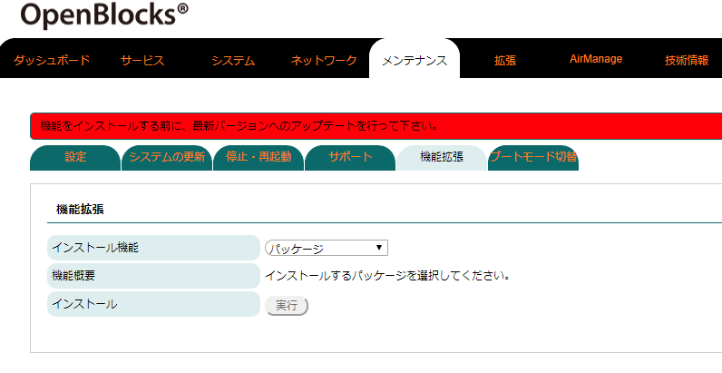
WEB UIの「メンテナンス」タブを選び、さらに「機能拡張」タブをクリックすると機能拡張用のパッケージを選択することができます。
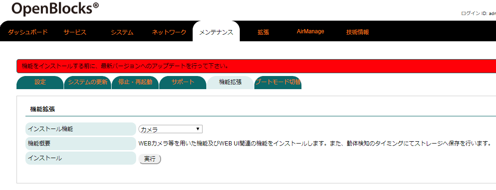
WEB UIの「メンテナンス」タブを選び、さらに「機能拡張」タブをクリックすると機能拡張用のパッケージを選択することができます。
インストール機能のリストから「カメラ」を選択します。
その後、インストールの「実行」ボタンを押し、インストールを行ってください。
尚、インストール完了後には反映を行うため、本体再起動が必要となります。そのため、「メンテナンス」→「停止・再起動」から本製品の再起動を行ってください。
カメラ機能設定¶
カメラ機能のインストールが完了している場合、サービスWEB UIの「サービス」→「基本」タブにカメラの項目が表示されます。
このカメラのリンクを押して下さい。これにより、「カメラ」タブへと遷移します。使用したい機能に関しては、後述の内容を参照の上適宜設定を行ってください。
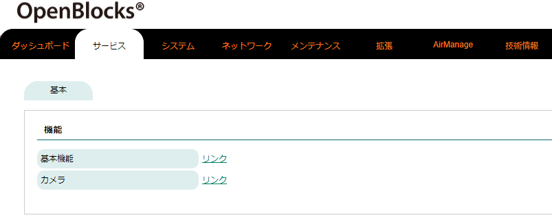
カメラ ストリーミング機能¶
「カメラ」→「カメラ」タブではOpenBlocks本体に接続しているカメラの画像データをWEB UI上にストリーミングとして表示することができます。また、WEB UIにてストリーミングの表示部の確認を行おうとした場合、URIプロキシ機能を用います。
接続しているカメラ動作の確認を行う場合に、ご使用ください。
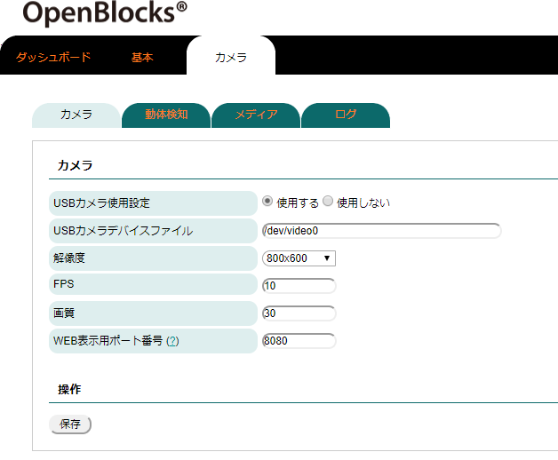
カメラ |
|
|---|---|
項目 |
備考 |
USBカメラ設定 |
USBカメラでのストリーミング表示を使用する場合には、「使用する」を選択してください。 |
USBカメラデバイスファイル |
OpenBlocksがカメラとして認識しているデバイスファイルを指定します。通常では変更する必要は ありません。 |
解像度 |
カメラが撮影する際の解像度を選択します。 ※本リスト内に表示される解像度の一覧はカメラ自体とは連動しておりません。 |
FPS |
フレームレートを設定します。ドキュメント作成時点での標準的なUSBカメラのFPSは30fps程度です ので、1～30までの間で設定してください。 |
画質 |
撮影する際の画質を1～100の間で設定します。(100に近づくほど高画質となります) 画質が高い場合、CPU負荷が高くなりますのでリソース状況確認の上、設定してください。 |
WEB表示用ポート番号 |
WEBに表示するためのポート番号を指定します。本システムでは使用していない8080をデフォルト で設定しております。 ※URIプロキシを用いて確認する場合には、このポート番号を設定して下さい。 |
設定完了後、保存ボタンを押すことによりカメラのストリーミング機能が起動・停止します。
使用する設定となっている場合、以下のように表示されます。
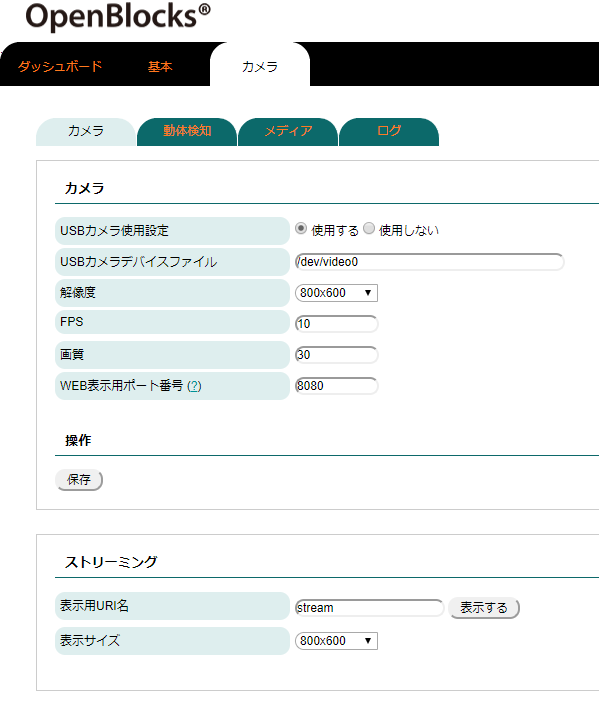
ストリーミング |
|
|---|---|
項目 |
備考 |
表示URI名 |
URIプロキシに設定したポート番号が存在する場合、自動入力されます。 また、「表示する」ボタンを押すことによりストリーミング画像がWEB UI上に表示されます。 |
表示サイズ |
WEB UI上に表示されるストリーミング画像のサイズを選択できます。 |
※WEB UI上に表示されるストリーミング画像は5分間表示されます。
動体検知機能¶
「カメラ」→「動体検知」タブではストリーミングデータまたはOpenBlocks本体に接続しているカメラを用いて動体検知を行うことができます。
動体を検知した際に動画の保存及び保存イベントにおけるスクリプトの実行処理についてもおこなうことができます。また、本機能についてもストリーミングを行うことができます。尚、ストリーミング機能については、URIプロキシ機能を用います。
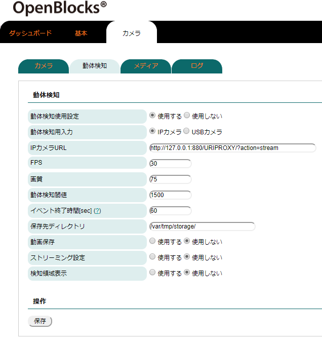 |
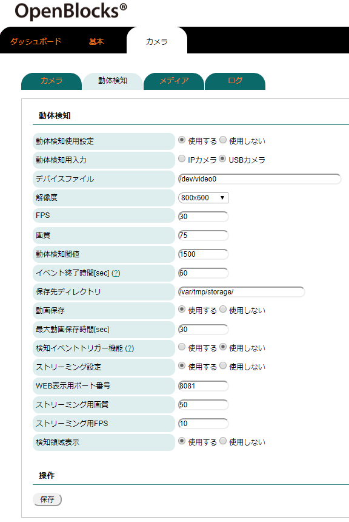 |
動体検知 |
|
|---|---|
項目 |
備考 |
動体検知使用設定 |
動体検知を使用する場合には、「使用する」を選択してください。 |
動体検知用入力 |
動体検知の検出として入力を「IPカメラ」または「USBカメラ」から選択します。 |
IPカメラURL(IPカメラ使用時) |
入力とするIPカメラのURLを指定します。前章のカメラストリーミング機能を入力とする場合はURI プロキシ機能を用いて以下のように設定してください。 http://127.0.0.1:880/<URIプロキシ名>/?action=stream また、外部のネットワークカメラを入力とすることも可能です。その場合、Basic認証はサポートし ておりますので、認証なしまたはBasic認証でのアクセスを使用して下さい。 |
デバイスファイル(USBカメラ使用時) |
OpenBlocksがカメラとして認識しているデバイスファイルを指定します。通常では変更する必要は ありません。 |
解像度(USBカメラ使用時) |
カメラが撮影する際の解像度を選択します。 ※本リスト内に表示される解像度の一覧はカメラ自体とは連動しておりません。 |
FPS |
フレームレートを設定します。ドキュメント作成時点での標準的なUSBカメラのFPSは30fps程度です ので、1～30までの間で設定してください。 |
画質 |
撮影する際の画質を1～100の間で設定します。(100に近づくほど高画質となります) 画質が高い場合、CPU負荷が高くなりますのでリソース状況確認の上、設定してください。 |
動体検知閾値 |
動体と認識するフレーム間での差分ピクセルの閾値を設定します。解像度及び処理したい内容に よって変更が必用となります。 |
イベント終了時間[sec] |
動体検出後、動きがなくなった場合に動体検知を終了とする時間を設定します。 |
保存先ディレクトリ |
動体検知を行った際に動画を保存する際のディレクトリを指定します。 ※動体検知量によって書き込み量が変わる為、SDカード上を推奨いたします。 |
動画保存 |
動体を検知した際に、動画を保存を行うか設定します。 |
動体検知 |
|
最大動画保存時間[sec](動画保存使用時) |
動画を保存する際に最大で保存を行う動画の秒数を指定します。 |
検知イベントトリガー機能(動画保存使用時) |
動画保存を行った際に、スクリプトを実行するかどうかを指定します。 実行するスクリプトは「拡張」→「スクリプト編集」タブにて作成可能です。 |
ストリーミング設定 |
動体検知状況をストリーミング機能にて表示するかを設定します。使用する場合に「使用する」を 選択してください。 |
WEB表示用ポート(ストリーミング時) |
WEBに表示するためのポート番号を指定します。本システムでは使用していない8081をデフォルトで 設定しております。 ※URIプロキシを用いて確認する場合には、このポート番号を設定して下さい。 |
ストリーミング用画質(ストリーミング時) |
ストリーミング時の画質を1～100の間で設定します。(100に近づくほど高画質となります) |
ストリーミング用FPS(ストリーミング時) |
ストリーミング時のフレームレートを設定します。1～100まで設定は可能ですが、カメラのFPSを上 回らない値を設定してください |
設定完了後、保存ボタンを押すことにより動体検知機能が起動・停止します。
ストリーミング機能を使用する設定となっている場合、以下のように表示されます。
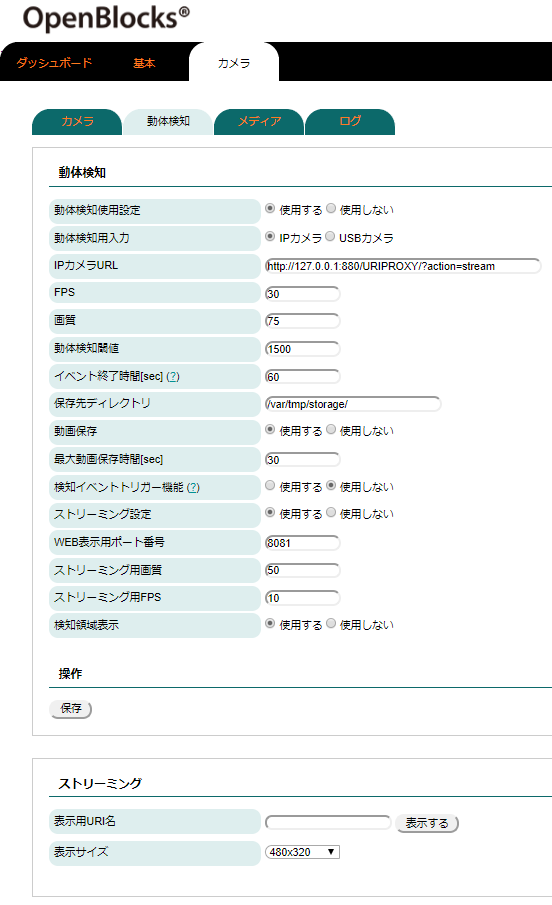
ストリーミング |
|
|---|---|
項目 |
備考 |
表示URI名 |
URIプロキシに設定したポート番号が存在する場合、自動入力されます。 また、「表示する」ボタンを押すことによりストリーミング画像がWEB UI上に表示されます。 |
表示サイズ |
WEB UI上に表示されるストリーミング画像のサイズを選択できます。 |
※WEB UI上に表示されるストリーミング画像は5分間表示されます。
検知イベントトリガー機能¶
動体検知の動画保存時に、任意のスクリプト内容を実行することができます。 スクリプトは、「拡張」→「スクリプト編集」タブから「動体検知イベント」を選択し、編集することができます。
注釈
動体検知イベントのスクリプトの実行ユーザーはmotionとなります。そのため、スクリプト内でファイル作成等を行う場合には、パーミッションに注意してください。
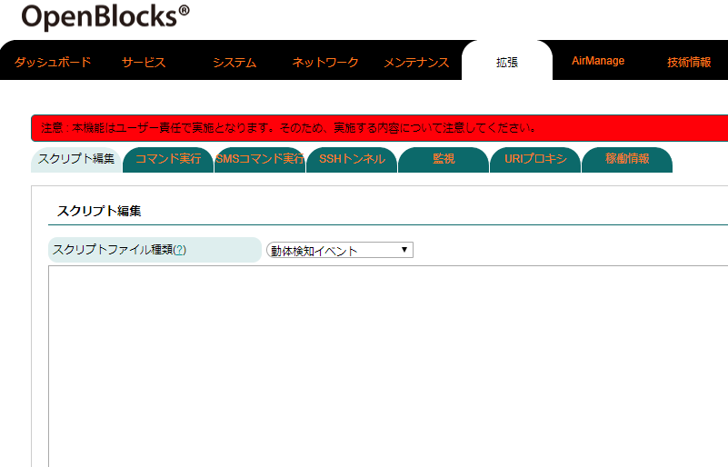
尚、本スクリプト向けに環境変数MOVIE_FILEに検知時に撮影した動画のファイルパスが含まれます。
また、本イベントトリガー用に通知向けの以下のスクリプトを用意しています。これらのスクリプトは、上記の「動体検知イベント」スクリプトに記載し二次的に呼び出して使用します。
通知方法 |
スクリプトパス |
補足 |
|---|---|---|
SMS |
/var/webui/scripts/motion_send_sms.sh |
モデム及びSMS対応SIMが必要です。 |
/var/webui/scripts/motion_send_email.sh |
インターネットの経路が必用です。 |
|
Unix Domain Socket |
/var/webui/scripts/motion_send_socket.sh |
●SMS通知
OpenBlocksに搭載しているモデム及びSIMを用いてSMSの送信を行います。
以下のファイルが必用となります。
/var/webui/upload_dir/motion_cfg/sendsms.json |
サンプル |
|---|
{
} |
キー |
データ型 |
内容 |
|---|---|---|
send_phone_number |
文字列 |
送信先電話番号 |
send_body |
文字列 |
送信するSMS本文 |
●E-Mail通知
OpenBlocksが稼働中のネットワークを経由して、メールサーバーに対してメールの送信を行います。以下のファイルが必用となります。
/var/webui/upload_dir/motion_cfg/sendmail.json |
サンプル |
|---|
{
} |
キー |
データ型 |
内容 |
|---|---|---|
smtp_server |
文字列 |
SMTPサーバー |
smtp_port |
INT型 |
SMTPポート |
auth |
BOOLEAN型 |
SMTP-AUTH使用設定 true : 使用、false : 未使用 |
auth_user |
文字列 |
認証ユーザー(SMTP-AUTH使用時に必要) |
auth_pass |
文字列 |
認証パスワード(SMTP-AUTH使用時に必要) |
to |
文字列 |
送信先アドレス |
from |
文字列 |
送信元アドレス |
subject |
文字列 |
件名 |
body |
文字列 |
メール本文 |
●Unix Domain Socket通知
OpenBlocks内で稼働しているUnix Domain Socket待ち受けを行っているプロセスに対してデータ送信を行うことができます。
以下のファイルが必用となります。
/var/webui/upload_dir/motion_cfg/sendsocket.json |
サンプル |
|---|
{
} |
キー |
データ型 |
内容 |
|---|---|---|
socket_path |
文字列 |
Unix Domain Socketパス |
abstract_flag |
BOOLEAN型 |
Abstract Socket使用設定 true : 使用、false : 未使用 |
send_body |
文字列 |
送信メッセージ |
本機能での送信データのメッセージはJSONとなります。
メッセージサンプルは以下となります。
メッセージサンプル |
|---|
{ "time" : "2018-07-17T09:32:15.864+09:00" , "message" : " 動体を検知しました。" } |
また、以下のPHPファイルのライブラリを用意することでJSONメッセージデータの拡張が行えます。
/var/webui/upload_dir/motion_cfg/extendsocket.lib.php |
拡張PHPファイルサンプル |
|---|
<?php
?> |
拡張メッセージサンプル |
|---|
{ "time" : "2018-07-17T09:32:15.864+09:00" , "message" : " 動体を検知しました。" , "extend" : "追加サンプル" } |
メディア機能¶
「カメラ」→「メディア」タブでは特定ディレクトリ直下に保存した画像及び動画データを表示及びダウンロードすることができます。
表示される画像データ及び動画データの拡張子は以下となります。
種類 |
対応拡張子 |
|---|---|
画像データ |
.svg、.apng、.bmp、.png、.jpeg、.jpg |
動画データ |
.mp4、.ogg、.webm |
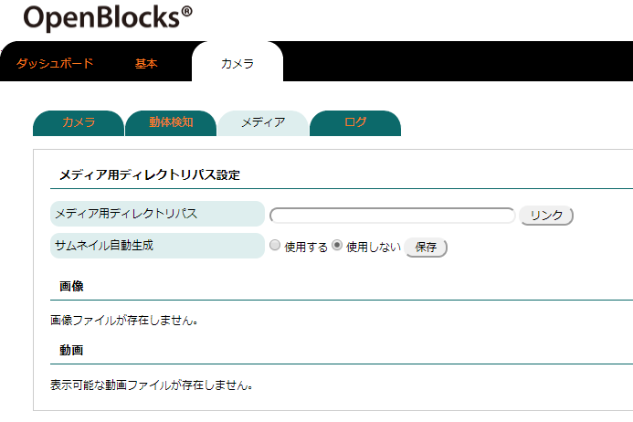 |
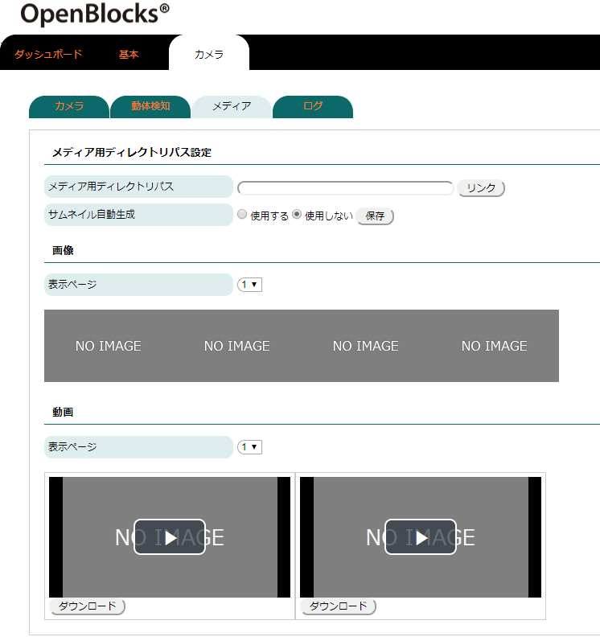 |
メディアディレクトリパス設定 |
|
|---|---|
項目 |
備考 |
メディアディレクトリパス |
動体検知等にて保存先に指定したディレクトリを設定します。ディレクトリパス設定後、「リンク 」ボタンを押してください。 |
サムネイル自動生成 |
メディアディレクトリパスに保存されている画像及び動画に対して、サムネイル画像の生成を行う かを設定します。 設定後、「保存」ボタンを押してください。 |
画像 |
画像を表示します。画像をクリックすることでポップアップします。画像のダウンロードに関し てはポップアップした画像を各ブラウザの機能からダウンロードを実施してください。 |
動画 |
動画を表示します。動画をクリックすることでポップアップします。また、「ダウンロード」ボタ ンを押すことで対象画像をダウンロードできます。 |
ログ機能¶
「カメラ」→「ログ」タブではストリーミング機能及び動体検知機能のログを確認することができます。
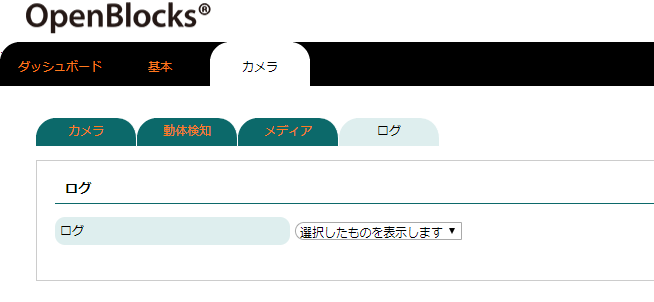 |
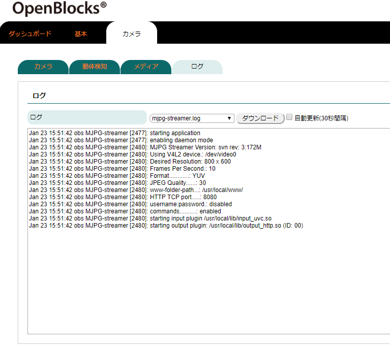 |
ログ |
|
|---|---|
項目 |
備考 |
ログ |
カメラストリーミング機能及び動体検知機能のログファイル一覧が表示されます。確認したいログ ファイルを選択することで、対象のログファイルが表示されます。 対象のログファイルを選択した場合、ダウンロードボタンが表示されます。ログファイルをダウン ロードしたい場合に押してください。 |